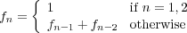

In this lab you will create programs which put to use some of the week's topics. You'll aso be introduced to some useful new constructs. By the end of the lab, you will have:
As with last week's lab you should create a lab02 directory in which to store all your work for this assignment:
% cd # takes you to your home directory
% cd cs150 # enters your 'cs150' folder
% mkdir lab02 # creates lab02 folder cwd
% cd lab02 # goes into that folder
% pwd # confirms you are in the appropriate directory
For future labs, the above steps won't be stated explicitly, but in general you should create the appropriate folder at the start of each new lab.
Also, don't forget that you've already done a lot of non-programming work on your prelab. You should always look over your corrected prelab and the solutions to the prelab (available on Blackboard) before you start the lab.
In this portion of the lab you'll be building a bunch of short programs that utilize for-loops.
beer.py: 4 points, individual
We imagine you are all familiar with the song 'Ninety-Nine Bottles of Beer on the Wall', but just in case, the first verse is
99 bottles of beer on the wall
99 bottles of beer!
Take one down, pass it around
98 bottles of beer on the wall!
Define the Problem:
Write a program called beer.py that prints out all 99 verses of the song.
input: none.
goal: prints all verses of the beer song to the console.
Understand the Problem:
You should thinkg about the first few verses of the song. The first verse is given above; what changes between the first and the second verse? Between the second and the third? What does the last verse look like?
Design the Algorithm:
Now it is time to think precisely about how you will solve this problem.
Your solution should
not copy and paste hundreds of lines of print statements. Instead, create a much shorter program by taking advantage of the power of the for-loop.
Again, don't worry about grammar - it's fine if you have "1 bottles of beer on the wall".
Implement a Design:
Once you think you have an algorithm written down in pseudocode, start writing your actual program in Python.
Use a constant NUM_BOTTLES to represent the number of bottles and use this in your for-loop. A constant is just a variable whose value never changes throughout the course of the program. Although this is not enforced in Python (there is nothing stopping you from changing its value), in other languages it may be, so it is a good concept to learn. By convention, we use ALL CAPS for the names of constants, so that you can recognize them easliy. By using a constant, you can now easily change the number of verses without looking through your program for all instances of "99" (i.e. your program is more easily maintained). As an added benefit, it also makes your code more readable.
Test the Program:
Once your program works with 99 bottles, try changing your constant to other values (for example: 10 bottles, 0 bottles, 1 bottle, etc.) and make sure that it works.
Handin:
It is a good habit to handin your files every time you finish a program, to make sure that we have up-to-date copies (in case something happens to your files, or you forget to handin at the end). So take a minute now to run the handin command (instructions are at the bottom of every lab), then continue with the next portion of the lab. You can hand in as many times as you want; each submission is distinct and time-stamped, and the graders will grade the latest one available.
sequence.py: 5 points, individual
Define the Problem:
Write a program called sequence.py that lists the squares of all integers from some starting number down to one.
input: get a number start from the user.
goal: compute and print the list of squares starting from start2 down to 12.
Understand the Problem:
For example, if start is 6 then the output of the program would be
Squares from 36 down to 1:
36, 25, 16, 9, 4, 1
Be sure to use the formatting given above, with a comma and a space after each number except for the final 1. (Hint: You might need to print the 1 out separately from the other numbers.) (If you need a refresher in how to format your print statements nicely, go back to lab 01.)
Design an Algorithm:
Think about the main steps of the program. Presumably step 1 is to get the input from the user. Then you have to figure out how to print the squares in the right order to the console, with the correct formatting. Write out the pseudocode before you touch the keyboard!
Implement a Design:
Now that you have a promising algorithm, it is time to put it into Python code. Go ahead and write up that program.
Test the Program:
If your syntax is correct, it is time to run your program with a variety of inputs. Try n=6 (because you know what the answer should look like), but also try other values of n, such as n=0, 1, 10, etc.
Handin:
It is a good habit to handin your files every time you finish a program, to make sure that we have up-to-date copies (in case something happens to your files, or you forget to handin at the end). So take a minute now to run the handin command (instructions are at the bottom of every lab), then continue with the next portion of the lab. You can hand in as many times as you want; each submission is distinct and time-stamped, and the graders will grade the latest one available.
fibonacci.py: 5 points, individual
The Fibonacci numbers are a sequence of integers defined by the following recurrence relation

Describe the Problem:
Write a program called fibonacci.py that computes the nth Fibonacci number
input: get a positive integer n > 2 from the user.
goal: compute and output the nth Fibonacci number.
Understand the Problem:
For example, the first six Fibonacci numbers are 1, 1, 2, 3, 5, 8.
A run of the program might appear as follows
My incredible Fibonacci number generator!
Please enter an integer: 8
The 8th number in the Fibonacci sequence is 21.
Design an Algorithm:
Write down pseudocode describing how you would solve this problem. Try to use enough detail so that it ressembles code, but not so much jargon that it is Python-specific and unintelligible to non-coders.
A few suggestions:
Implement a Design:
Translate your pseudocode into a Python program named fibonacci.py.
Although your final program should only print the requested Fibonacci number, you may want to temporarily include print statements within your loop so you can make sure the program is doing what you intended.
Test the Program:
Try running your program with a variety of inputs. Try n=8 (because you know the answer) and n=14 (you did this on your prelab). Also try n=0,1,2, etc. and check that what it returns makes sense.
Handin:
Just another reminder to run the handin command to hand in your files.
interest.py: 5 points, partner
In light of the recent economic meltdown, you've decided to take a more conservative approach with your financial portolio; as of today, you're getting rid of all your sub-prime morgage securities, all your toxic assets (what were you thinking?), and your considerable stockpile of pork bellies.
To play it safe, you're going to put your money into a savings account. This account earns a fixed percentage of interest every month. Assuming you make reguar, monthly deposits as well, you'd like to know how much you'll have after a given number of month, assuming your monthly contribution occurs after interest is accrued.
Describe the Problem:
Write a program called interest.py with the following functionality.
input: get an initial deposit, a monthly interest rate, a monthly deposit, and a number of months n from the user.
goal: compute and output the total money in your possession at the end of n months.
Understand the Problem:
For example, suppose your initial savings is $100, the monthly interest rate is 1%, and you plan on contributing $20 a month. Then during the first month, you'd get $1 of interest (100 * 0.01) followed by another $20 from your regular contribution. So you'd end the first month with $121. On the second month, your interest would be $1.21 (i.e., 121 * 0.01), which, together with you fixed $20, leaves you with $142.21.
After the third month, you'd have $163.63. Technically, the amount you'd have on month 3 would be $163.6321, but most accounts don't keep track of fractions of pennies (as fans of the movie Office Space may know), so you'll want to cut off anything below 2 decimal places.
A run of the program might appear as follows.
Welcome to the Interest Calculator! Enter your initial savings: 100 Enter the monthly interest rate: 0.01 Enter your monthly contribution: 20 How many months would you like computed: 3 Initially you put in $100 After month 1 you would have $121 After month 2 you would have $142.21 After month 3 you would have $163.63
Write pseudocode that solves this problem. As with the previous problem, give enough detail to be using loops and variables, use Python-like indentation, but try to avoid Python-specific syntax.
Translate your pseudocode into a Python program named interest.py.
As pointed out above, you'll need to truncate your output to 2 decimal places. One clever way to do this: first multiply your value by 100 (now your number represents cents). Next, "cast" that number as an int (this means converting the number to an integer, which effectively tosses out any fraction of a cent that might have been there). You use int(x) to produce the value of x cast as an integer. You could accomplish the same thing by doing integer division by 1. Either way, you now have a whole number of cents. Real division by 100 should get you what you're looking for. Note that trailing zeros after the decimal place will not print out when you print the number (so 123.10 will print as "123.1" and 123.00 will print as "123".) This is fine.
Run your program on a variety of inputs. You should certainly try the example given above, up to 5 months (you calculated this on your prelab).
Note: If your answers are off by a cent here or there, don't worry, it is most likely just a rounding error.
Handin:
Just another reminder to run the handin command to hand in your files.
In the next batch of problems, we're going to be looking for patterns in sequences of figures. For each problem, a few figures are given, each of which made out of ASCII characters and is associated with an index (a number). Your task is to first determine the pattern that dictates how a particular figure in the sequence relates to the corresponding number. Then you'll write a program that generates an arbitrary figure from the given sequence.
Describe the Problem:
For each pattern X, write a program called patternX.py that generates the appropriate pattern.
input: get a positive integer n that represents the index of your pattern.
output: print the appropriate pattern to the console.
Understand the Problem:
For example, below are some indices (the numbers on the left) and their associated figures for Pattern A.
patternA.py: 2 points, individual
For your first program (patternA.py), consider the pattern shown below
1 2 3
1 2 3
1 2 3
1 2 3 4
1 2 3 4
1 2 3 4
1 2 3 4
1 2 3 4 5
1 2 3 4 5
1 2 3 4 5
1 2 3 4 5
1 2 3 4 5
Design an Algorithm:
You can probably see what's happening; figure n consists of n rows, each of which includes all numbers from 1 to n. Therefore your algorithm will need to first get an integer n from the user. Then you'll loop over rows from 1 to n. And for each row, you'll use a nested loop to print the digits from 1 to n, separated by spaces. In particular, the psuedocode may be:
Implement a Design:
Translate your pseudocode into Python programs named patternX.py (where X ranges over A, B, C, D, E, and N.)
patternB.py: 2 points, individual
1 1 1
2 2 2
3 3 3
1 1 1 1
2 2 2 2
3 3 3 3
4 4 4 4
1 1 1 1 1
2 2 2 2 2
3 3 3 3 3
4 4 4 4 4
5 5 5 5 5
patternC.py: 2 points, partner
1 2 3
2 3
3
1 2 3 4
2 3 4
3 4
4
1 2 3 4 5
2 3 4 5
3 4 5
4 5
5
patternD.py: 5 points, partner
1
1 2 2
1 2 2 3 3 3
1
1 2 2
1 2 2 3 3 3
1 2 2 3 3 3 4 4 4 4
1
1 2 2
1 2 2 3 3 3
1 2 2 3 3 3 4 4 4 4
1 2 2 3 3 3 4 4 4 4 5 5 5 5 5
patternE.py: 5 points, partner
***
*
**
*
***
****
*
*
***
*
*
****
*****
*
*
*
****
*
*
*
*****
patternN.py: 5 points, individual
* *
** *
* **
* *
* *
** *
* * *
* **
* *
* *
** *
* * *
* * *
* **
* *
Test the Programs:
Don't forget to run your input on a variety of inputs!
If you followed the Honor Code in this assignment, insert a paragraph attesting to the fact within one of your .py files.
I affirm that I have adhered to the Honor Code in this assignment.
You now just need to electronically handin all your files. As a reminder
% cd # changes to your home directory
% cd cs150 # goes to your cs150 folder
% handin # starts the handin program
# class is 150
# assignment is 2
# file/directory is lab02
% lshand # should show that you've handed in something
You can also specify the options to handin from the command line
% cd ~/cs150 # goes to your cs150 folder
% handin -c 150 -a 2 lab02
beer.py sequence.py fibonacci.py interest.py patternA.py patternB.py patternC.py patternD.py patternE.py patternN.py